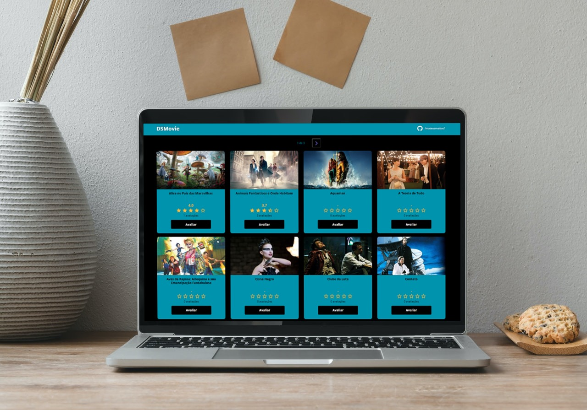

DSMovie
Descrição do projeto
Na Semana de Spring React do Instrutor Nelio Alves, nosso objetivo principal foi construir uma plataforma de avaliação de filmes, chamado DSMovie. Anteriormente eu já havia participado de um curso do Nelio, então eu sabia que a didática dele iria fomentar no meu aprendizado.
De modo mais detalhado, no DSMovie nós temos telas, que podem ser navegadas usando as setinhas na parte superior do site. Cada filme apresenta uma capa, seguido de suas avaliações, estrelas numa média de 1 a 5 com base nas avaliações dos usuários, e também a quantidade de usuários que votaram. Cada filme pode ser acessado para ser atribuido uma nota, e o usuário insere sua nota UMA vez para cada filme que quiser, sendo que se tentar inserir novamente, a nota do próprio usuário será apenas atualizada.
Mas para atender os estudantes de um modo geral, o Nelio criou 2 caminhos: a criação do DSMovie para iniciantes (HTML e CSS), e para quem já dominava algumas coisas como Programação Orientada à Objetos. Nesse último caso, o projeto foi construído com ReactJS e Spring Boot, usando o PostgreSQL como o banco de dados relacional..
De modo geral, o projeto foi muito proveitoso, pois pude ver mais de perto o Spring Boot, visto que é uma área que vai ser mais útil para mim atualmente. Também pude rever alguns coceitos do React, que querendo ou não, é uma biblioteca que vem se mostrando forte no mercado.
Clique aqui para acessar o link do meu projeto no Github!
← Portfólio
← Home